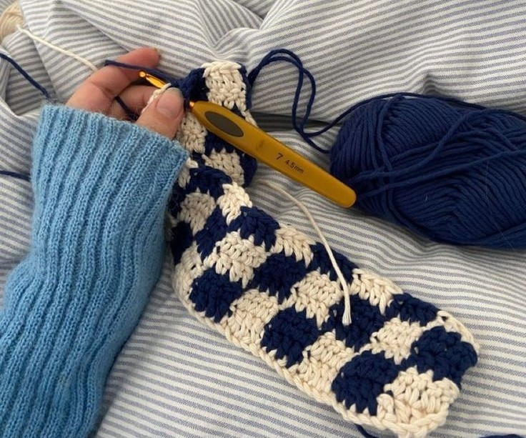

Como começar no crochê sem segredos
Por: Lala
Se você acha que precisa de mil ferramentas para dar os primeiros pontos, pense de novo! Tudo o que você precisa é de uma agulha confortável e um novelo de fio de espessura média para treinar suas primeiras correntinhas.
Fonte: Círculo Produtos